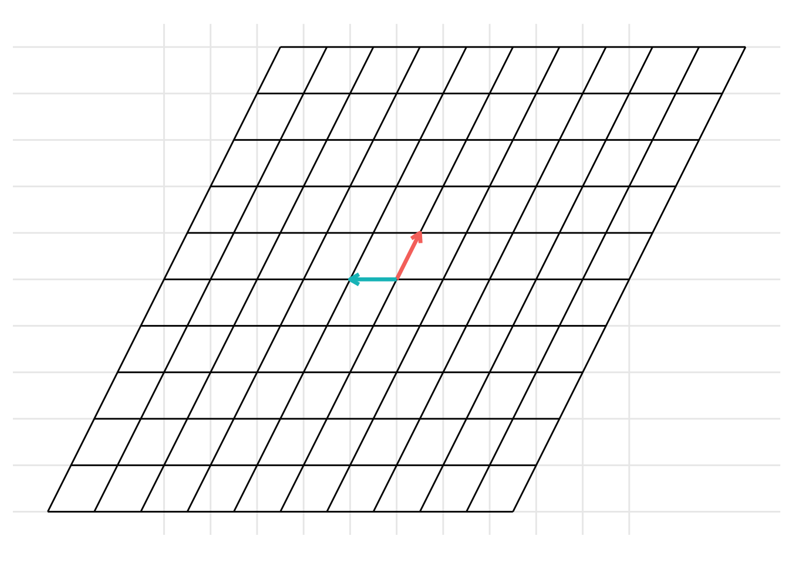
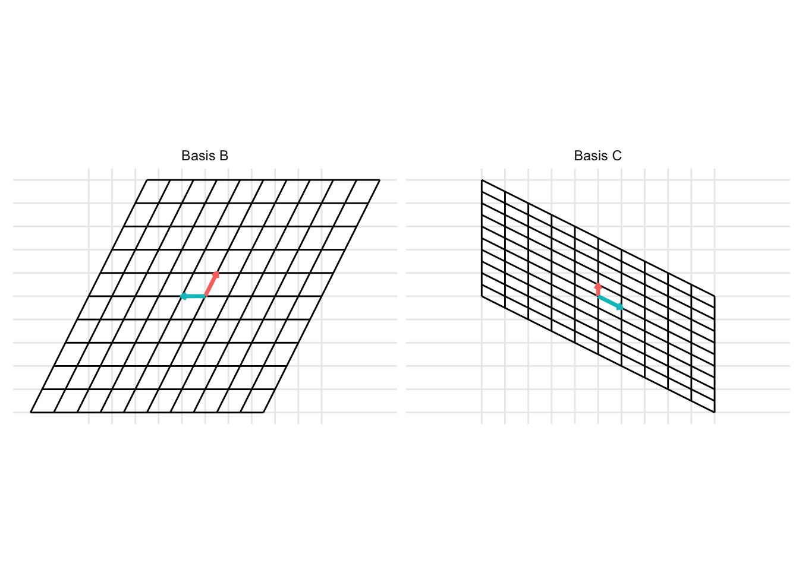
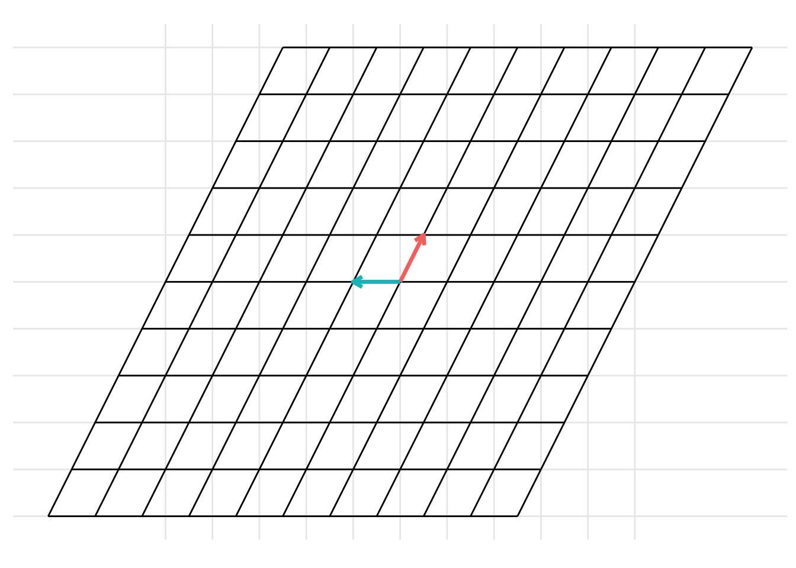
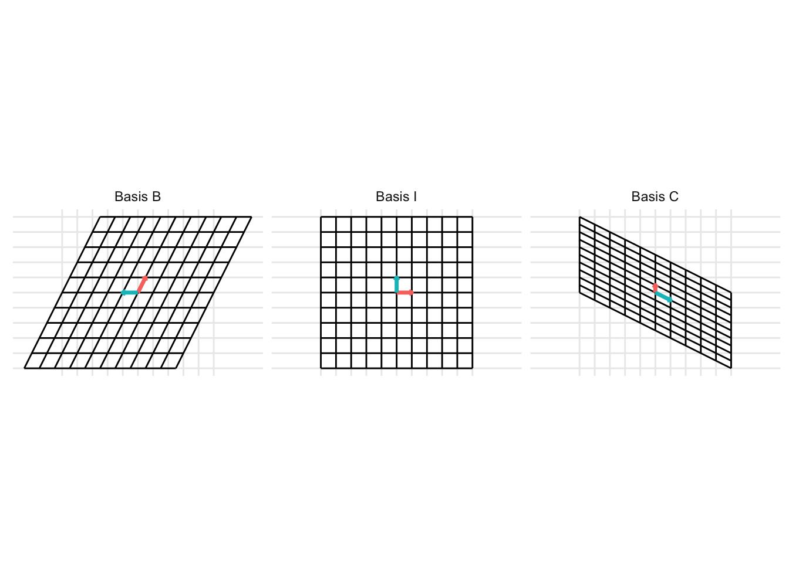

Chapter 19 Change of basis
Consider two bases \(\mathcal{B} = \{ \mathbf{b}_1, \ldots, \mathbf{b}_n \}\) and \(\mathcal{C} = \{ \mathbf{c}_1, \ldots, \mathbf{c}_n \}\) for a vector space \(\mathcal{V}\). If we have a vector \(\left[\mathbf{x}\right]_B\) with coordinates in \(\mathcal{B}\), what are the coordinates of \(\left[\mathbf{x}\right]_C\) with respect to \(\mathcal{C}\)?
- Recall: we know how to change from the standard coordinates to the basis \(\mathcal{B}\). If \(\mathbf{x}\) is a vector in the standard coordinates and \(\mathbf{B} = \begin{pmatrix} \mathbf{b}_1 & \ldots & \mathbf{b}_n \end{pmatrix}\) is a matrix with columns given by the basis \(\mathbf{B}\), the coordinates of \(\left[\mathbf{x}\right]_B\) of the vector \(\mathbf{x}\) with respect to the basis \(\mathcal{B}\) are \[ \begin{aligned} \left[\mathbf{x}\right]_B = \mathbf{B}^{-1} \mathbf{x} \end{aligned} \] and, as a consequence, given a vector \(\left[\mathbf{x}\right]_B\) with coordinates with respect to the basis \(\mathcal{B}\), the vector of coefficients \(\mathbf{x}\) with standard coordinates is given by \[ \begin{aligned} \mathbf{x} = \mathbf{B} \left[\mathbf{x}\right]_B. \end{aligned} \]
Notice that change of coordinates is a linear transformation from \(\mathcal{B}\) to \(\mathcal{C}\) with transformation matrix \(\mathbf{A}\). Despite the more complex notation, this is just another linear transformation [link].
:::{.example} Show the change of basis from the basis \(\mathcal{B} = \left\{ \begin{pmatrix} \frac{1}{2} \\ 1 \end{pmatrix}, \begin{pmatrix} -1 \\ 0 \end{pmatrix}\right\}\) to the basis \(\mathcal{C} = \left\{ \begin{pmatrix} 0 \\ \frac{1}{2} \end{pmatrix}, \begin{pmatrix} 1 \\ -\frac{1}{2} \end{pmatrix}\right\}\). To do this, represent the columns that make up the basis \(\mathcal{B}\) as the matrix \(\mathbf{B} = \begin{pmatrix} \frac{1}{2} & -1 \\ 1 & 0 \end{pmatrix}\) and represent the columns that make up the basis \(\mathcal{C}\) as the matrix \(\mathbf{C} = \begin{pmatrix} 0 & \frac{1}{2} \\ 1 & -\frac{1}{2} \end{pmatrix}\). Then, the change of basis can be represented as
B <- matrix(c(1/2, 1, -1, 0), 2, 2)
C <- matrix(c(0, 1/2, 1, -1/2), 2, 2)
p <- plot_change_basis(B, C)
which can be represented with the static images

The change of basis represents a linear transformation. When previously discussing linear transformations in Chapter 8, we considered a linear transformation from the standard basis \(\mathcal{I}\) defined by the basis vectors \(\left\{ \begin{pmatrix} 1 \\ 0 \end{pmatrix}, \begin{pmatrix} 0 \\ 1 \end{pmatrix} \right\}\) with the vectors represented as the columns of the identity matrix \(\mathbf{I}\). We can consider a change of basis as two consecutive linear transformations. First, a linear transformation from the basis \(\mathcal{B}\) to the standard basis \(\mathcal{I}\) and then a linear transformation from the standard basis \(\mathcal{I}\) to the basis \(\mathcal{C}\). This can be represented using the following example code:


19.1 Changing coordinates between different bases
Now, we can combine these ideas. Given a vector \(\left[\mathbf{x}\right]_B\) written with coordinates with respect to the basis \(\mathcal{B}\), we can find the coordinates of \(\left[\mathbf{x}\right]_C\) with respect to the basis \(\mathcal{C}\). First, we find the coordinates of the vector \(\mathbf{x}\) with respect to the standard basis then find the coordinates of \(\left[\mathbf{x}\right]_C\) with respect to the basis \(\mathcal{C}\). Let \(\mathbf{B} = \begin{pmatrix} \mathbf{b}_1 & \ldots & \mathbf{b}_n \end{pmatrix}\) and \(\mathbf{C} = \begin{pmatrix} \mathbf{c}_1 & \ldots & \mathbf{c}_n \end{pmatrix}\), then given a vector \(\left[\mathbf{x}\right]_B\) with coordinates with respect to the basis \(\mathcal{B}\), the coordinates \(\left[\mathbf{x}\right]_C\) of this vector with respect to the basis \(\mathcal{C}\) is \[ \begin{aligned} \left[\mathbf{x}\right]_C = \mathbf{C}^{-1} \mathbf{B} \left[\mathbf{x}\right]_B. \end{aligned} \]
Draw diagram
Example 19.1 Working with the same bases \(\mathcal{B} = \left\{ \begin{pmatrix} \frac{1}{2} \\ 1 \end{pmatrix}, \begin{pmatrix} -1 \\ 0 \end{pmatrix}\right\}\) and \(\mathcal{C} = \left\{ \begin{pmatrix} 0 \\ \frac{1}{2} \end{pmatrix}, \begin{pmatrix} 1 \\ -\frac{1}{2} \end{pmatrix}\right\}\) from the previous example, Let \(\left[\mathbf{x}\right]_B = \begin{pmatrix} -3/2 \\ 1/2 \end{pmatrix}\) be the coordinates of the vector \(\mathbf{x}\) with respect to the basis \(\mathcal{B} = \left\{ \begin{pmatrix} 1/2 \\ 1 \end{pmatrix}, \begin{pmatrix} -1 \\ 0 \end{pmatrix}\right\}\). Find
- the coordinates of \(\mathbf{x}\) with respect to the standard basis and
- the coordinates of \(\mathbf{x}\) with respect to the basis \(\mathcal{C}\).
Solution. Here we solve the two questions from the example above.
- Recall that the coordinates \(\left[\mathbf{x}\right]_B\) of \(\mathbf{x}\) with respect to the basis \(\mathcal{B}\) mean that the vector \(\mathbf{x}\) can be written as a linear combination of the basis vectors \(\mathbf{b}_1\) and \(\mathbf{b}_2\) with coefficients given by the elements in \(\left[\mathbf{x}\right]_B = \begin{pmatrix} \left[x_1\right]_B \\ \left[x_2\right]_B \end{pmatrix}\). This results in the equation
\[ \begin{aligned} \mathbf{x} & = \left[x_1\right]_B \mathbf{b}_1 + \left[x_2\right]_B \mathbf{b}_2 \end{aligned} \] Plugging the values from the example gives \[ \begin{aligned} \mathbf{x} & = \left[x_1\right]_B \mathbf{b}_1 + \left[x_2\right]_B \mathbf{b}_2 \\ & = -1.5 \begin{pmatrix} 1/2 \\ 1 \end{pmatrix} + 0.5 \begin{pmatrix} -1 \\ 0 \end{pmatrix} \\ & = \begin{pmatrix} -3/4 \\ -3/2 \end{pmatrix} + \begin{pmatrix} -1/2 \\ 0 \end{pmatrix} \\ & = \begin{pmatrix} -5/4 \\ -3/2 \end{pmatrix} \end{aligned} \] 2) Now, recall the coordinates \(\left[\mathbf{x}\right]_C\) of \(\mathbf{x}\) with respect to the basis \(\mathcal{C}\) mean that the vector \(\mathbf{x}\) can be written as a linear combination of the basis vectors \(\mathbf{c}_1\) and \(\mathbf{c}_2\) with coefficients given by the elements in \(\left[\mathbf{x}\right]_C = \begin{pmatrix} \left[x_1\right]_C \\ \left[x_2\right]_C \end{pmatrix}\). This results in the equation
\[ \begin{aligned} \mathbf{x} & = \left[x_1\right]_C \mathbf{c}_1 + \left[x_2\right]_C \mathbf{c}_2 \end{aligned} \] However, unlike part (1), we do not know the coefficients \(\left[\mathbf{x}\right]\) but need to solve for them. Rewriting the above equation in the form of \(\mathbf{A}\mathbf{x} = \mathbf{b}\) gives \[ \begin{aligned} \mathbf{C} \left[ \mathbf{x} \right]_C & = \mathbf{x} \end{aligned} \] Because the matrix of basis vectors \(\mathbf{C}\) is an invertible matrix (a basis is a linearly independent spanning set), the coefficients \(\left[\mathbf{x}\right]_C\) can be solved using the equation \[ \begin{aligned} \mathbf{C} \left[ \mathbf{x} \right]_C & = \mathbf{x} \\ \mathbf{C}^{-1} \mathbf{C}\left[ \mathbf{x} \right]_C & = \mathbf{C}^{-1}\mathbf{x} \\ \left[ \mathbf{x} \right]_C & = \mathbf{C}^{-1} \mathbf{x} \end{aligned} \] The matrix inverse \(\mathbf{C}^{-1}\) can be found using theorem 9.1 to get \(\mathbf{C}^{-1} = \begin{pmatrix} 1 & 2 \\ 1 & 0 \end{pmatrix}\). Then, plugging in the values from the example gives
\[ \begin{aligned} \left[ \mathbf{x} \right]_C & = \mathbf{C}^{-1} \mathbf{x} \\ & = \begin{pmatrix} 1 & 2 \\ 1 & 0 \end{pmatrix} \begin{pmatrix} -5/4 \\ -3/2 \end{pmatrix} \\ & = \begin{pmatrix} -17/4 \\ -5/4 \end{pmatrix} \end{aligned} \] Another way to change coordinates is to change directly from basis \(\mathcal{B}\) to \(\mathcal{C}\) without going through the intermediate transformation to the standard coordinates. Combining the results from (1) and (2) gives \[ \begin{aligned} \left[ \mathbf{x} \right]_C & = \mathbf{C}^{-1} \mathbf{x} \\ & = \mathbf{C}^{-1} \mathbf{B} \left[\mathbf{x}\right]_B \end{aligned} \] so that one can change coordinates from the basis \(\mathcal{B}\) to the basis \(\mathcal{C}\) using the linear transformation defined by the matrix multiplication \(\mathbf{C}^{-1} \mathbf{B}\).
In R, first define the basis matrices B and C and the coordinates x_b of the vector \(\mathbf{x}\) with respect to the basis \(\mathcal{B}\).
1) The coordinates x with respect to the standard basis is
## [,1]
## [1,] -1.25
## [2,] -1.502) The coordinates x_c with respect to the basis \(\mathcal{C}\) can be found by calculating the matrix inverse C_inv and then using the matrix inverse to calculate the coordinates with respect to the basis \(\mathcal{C}\) as
## [,1]
## [1,] -4.25
## [2,] -1.25Done as a single transformation, the linear transformation is defined as
## [,1] [,2]
## [1,] -0.5 1
## [2,] 1.0 2which gives the coordinates
## [,1]
## [1,] 1.25
## [2,] -0.50Example 19.2 3-d change of basis